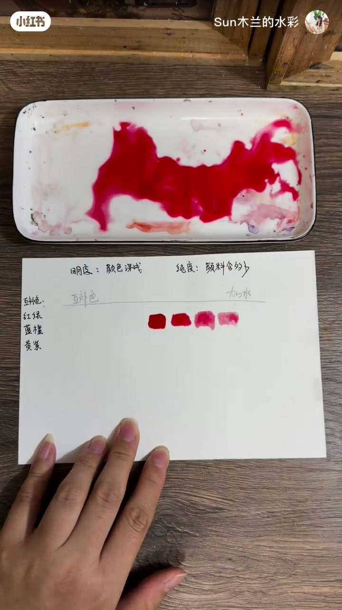
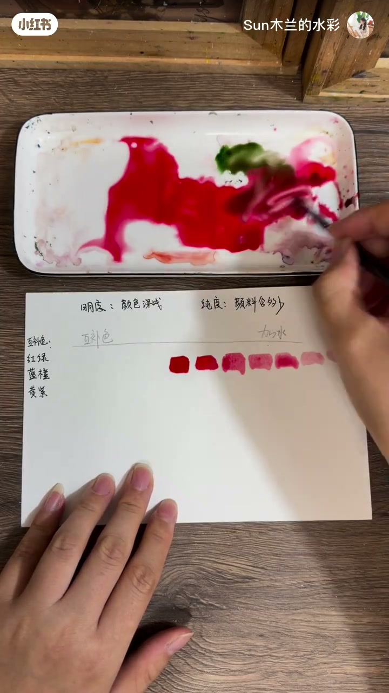
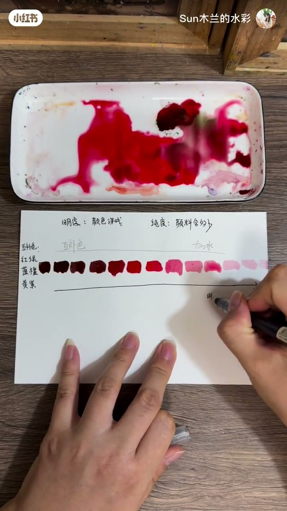

内容要点
「Sun木兰的水彩」零基础向：最易混淆的是明度与纯度。以红色为例——加水越多颜色越浅、明度越高；加绿色补色则变暗、明度降低。明度是单箭头（低→高）；纯度是中间最纯、往两边（加水或加补色）都降低。改明度时纯度往往一起变。
知识结构
[00:00→00:34]
提高明度
水分越多红色越浅，明度升高。
[00:34→00:49]
降低明度
加绿色补色，绿越多越暗，明度下降。
[00:49→01:12]
双轴关系
明度单箭头；纯度中间最高向两侧降；二者常同时改变。
总结
明度问深浅，纯度问鲜灰；加水或加补色都会拉低纯度，所以调明度时别以为纯度还能原地不动。
00:00-01:12红色示范：明度单箭头，纯度从中间往两边掉
开场点题：零基础小白最易搞混明度与纯度。提高明度：水分越多，颜色越来越浅，明度越来越高。降低明度：加入补色——对红是绿；绿加得越多越暗，明度下降。
画明度箭头：从左到右明度由低到高，是单箭头。纯度不是单箭头：中间那根是最纯的红，往两边（加水或加补色）纯度都在降低。所以改变明度时，纯度也常跟着变，两者同时改变。画面以颜料块与箭头图示辅助，适合收藏当色彩入门卡。

[00:32] 红色加水变浅：演示明度升高
Red thinned with water: demonstrating raised value

[00:42] 红加绿补色变暗：演示明度降低
Red plus green complement darkens: demonstrating lowered value

[00:55] 图示：明度单箭头 vs 纯度中间最高向两侧降
Diagram: value as a one-way arrow vs. chroma peaking mid-scale and falling both ways
完整转录（12段）
以下文本由 Whisper medium 模型自动转录，可能存在少量识别误差，已尽可能修正。
零基礼小伙备最容易搞混的就是明度和纯度
明度就是水份越多,颜色越来越浅,明度就越来越高
同样要降低明度就是加入补色,补色就是绿色
通过在红色的颜料中加入绿色的颜料,降低明度
绿色加的越多,颜色就越来越暗,同时降低了明度
现在我们画一个明度的箭头,单箭头
从左到右,明度由低到高
纯度就不是单箭头了,纯度是由中间的这根线
中间的这根是最纯的红色,它往两边去,纯度都是在降低
就是你不管是加水还是加补色,你这个纯度都是降低了
所以我们在改变明度的时候,纯度也会跟著变化
它们两个是同时改变的